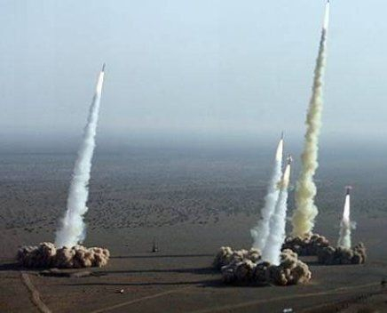

Chapter Ten:
A Chinese Strategy for Victory
The seeds of a counter to NATO and the Pentagon’s strategic threat to force China into unwilling submission to their New World Order plans – sometimes politely called “globalization” – fortunately exist in an active form. It is implicit in the membership and associate nations in the Shanghai Cooperation Organization, most emphatically Russia and Iran.
“If you know the enemy and know yourself, you need not fear the result of a hundred battles. If you know yourself but not the enemy, for every victory gained you will also suffer a defeat. If you know neither the enemy nor yourself, you will succumb in every battle”…
“If your enemy is secure at all points, be prepared for him. If he is in superior strength, evade him… Attack him where he is unprepared, appear where you are not expected.”
― Sun Tzu, The Art of War
Part I: The Strategic Reality
China faces a strategic reality in 2013 that is unlike any challenge faced in the history of the Peoples’ Republic. The previous eight chapters of this work are by no means a complete review of the threats to the future existence of China as a sovereign nation-state. They are, however, intended to be a catalyst to a broader debate on the true dangers China faces. Such a debate is urgently necessary not only for the future well-being of China and the Chinese people. It is urgent for the future well-being of the entire world population, including most emphatically the population of the United States and of Western Europe, as China has become a vital actor in the effort to create a counter-pole to a one-world totalitarian control.
In effect China’s leadership has already begun reacting to many of the threats or forms of disguised or overt warfare outlined. China’s Central Bank has engaged in a Renminbi strategy to make the currency less and less dependent on the US dollar, and potentially leading to its acceptance as an alternative reserve currency, at least for China’s Asian and Eurasian trading partners. China has led the world’s most active oil acquisition strategy since at least 2001 in Africa, the Middle East, Latin America and elsewhere. In the process, with mistakes along the way, China has enabled numerous African nations to begin to invest in their national economic development free from the shackles of IMF debt conditionalities.
Yet if we look at the totality of the threats confronting China in the second decade of the 21st Century, China is anything but secure. Maintaining a stable and secure China to the end of this Century will require extraordinary effort and resources on the part of the entire Chinese people.
The Arab Spring was launched by NATO countries, above all by the USA and France, in order to redraw the map of the Middle East to the detriment of China’s main oil import sources.[324] As chronicled herein, the Pentagon’s AFRICOR was created in 2008 specifically to rob China of its oil security from Africa. The issue of Chinese food security has been a disaster, as GMO soybeans contaminated with glyphosate comprise at least 61% of all soybeans consumed by animals and humans in China. Chinese crops are being massively sprayed with neo-nicotinoids that are doing untold damage to insect, bee colony and bird species and ultimately the human population that consumes crops sprayed with the toxic insecticides.
The industrialization of Chinese agriculture along the model of the American, is destroying the food quality of the Chinese diet, creating epidemics of allergies and illnesses such as Diabetes II. The decision to proliferate the drugs and vaccines patented by the American and Swiss pharmaceutical cartel is creating a generation with illnesses and chronic health problems worse than the illnesses they theoretically were designed to prevent. The Pentagon military deployments around the Obama 2012 China “Pivot” confront China with a severe challenge to defend her oil and sea supply lines as well as her own borders.
The rising provocations of Western trade wars and WTO challenges to Chinese exports or domestic manufacture is binding China into the rules of a game, the globalization game, where ultimately, rather than being the “winner” as in the last three decades, China increasingly will be forced to be the loser.
The decision by the Government of China to open earthquake-prone regions of China for US, UK and French oil companies that introduce toxic shale gas fracking methods to extract gas threatens not only China’s scarce fresh water supply, but also threatens to detonate deadly and destructive earthquakes in the country. This is a consequence likely far more costly to the national economy than the gain in a few billion cubic meters of gas. The open circulation across China of Hollywood films and even the semi-controlled Internet pose challenges to China’s cultural sovereignty and integrity that have not been fully appreciated.
What should a concerned and patriotic national consensus seek to do in order to roll-back all or most of these threats? What we propose here is intended as mere illustration from abroad, and not any blueprint. Chinese people are the only qualified people to make sovereign decisions for their future in the most beneficial way. The following are intended as suggestions from a friend of China for broader debate.
As the leading American geopolitical strategist Zbigniew Brzezinski openly admitted, the sole threat to unchallenged American Superpower hegemony since the collapse of the Soviet Union in 1990-1991 has been the emergence of an economically and politically integrated Eurasian land-space which draws China and Russia into a common alliance of shared strategic interests.[325]
Brzezinski, still today in his late 80’s a senior American strategist, made several statements in his 1998 book, The Grand Chessboard, regarding the geopolitical threat that a vibrant growing Eurasia posed for America: “Ever since the continents started interacting politically, some five hundred years ago, Eurasia has been the center of world power.”[326]
Brzezinski added, “It is imperative that no Eurasian challenger emerges capable of dominating Eurasia and thus of also challenging America…”[327] Then he summed up the true threat to American sole superpower hegemony seen in the aftermath of the collapse of the Soviet Union:
How America ‘manages’ Eurasia is critical. A power that dominates Eurasia would control two of the world’s three most advanced and economically productive regions. A mere glance at the map also suggests that control over Eurasia would almost automatically entail Africa’s subordination, rendering the Western Hemisphere and Oceania geopolitically peripheral to the world’s central continent. About 75 per cent of the world’s people live in Eurasia, and most of the world’s physical wealth is there as well, both in its enterprises and underneath its soil. Eurasia accounts for about three-fourths of the world’s known energy resources.[328]
Part II: Eurasian Military Defense
The seeds of a counter to NATO and the Pentagon’s strategic threat to force China into unwilling submission to their New World Order design, sometimes politely called “globalization,” fortunately exist in an active form. It is implicit in the membership and associate nations in the Shanghai Cooperation Organization.
The Shanghai Cooperation Organization, today in many respects still an embryo, contains within its membership the seed-crystal for just such a cohesive Eurasian challenge to a destructive one-world dictatorship. The Shanghai Cooperation Organization (SCO) was established in 2001 as a regional economic and trade organization which increasingly is assuming the role of a “counter-NATO” as Washington expands the war in Afghanistan and the Middle East.
SCO includes, in addition to Russia and China, Kazakhstan, Kyrgyzstan, Tajikistan and Uzbekistan. Iran, Pakistan and India have observer status, but are not yet admitted as members for a variety of reasons, not the least that SCO includes a mutual defense component requiring all to defend an attack against any member.
Eurasian mutual cooperation, especially between the two great powers, Russia and China, is rapidly assuming a strategic depth. The mutual decision by China and Russia to refuse to agree to a UN-sanctioned military intervention into Bashar al-Assad’s Syrian regime has already begun to reveal the deep fault lines within the members of the NATO anti-Assad coalition. The longer China and Russia as a combined opposition hold firm, the more fault ruptures and divisions among the nations of the Western NATO globalist faction will emerge, presenting China with new, even unexpected opportunities to forge new alliance or cooperation partners against the forces of a nominally superior NATO military opposition.
It is instructive to recall the wisdom of Sun Tzu: “If your enemy is secure at all points, be prepared for him. If he is in superior strength, evade him… Attack him where he is unprepared, appear where you are not expected.” If China understands these words not in the sense of direct military attack but rather in terms of countermeasures in an undeclared war of ideas and opposing visions of the world future, China can “win” the war against a militarily far superior adversary, one internally deeply divided and confused.
Part III: Countering the US Missile “Defense” Threat
The vital component of a viable military defense is already in the making. It involves separate and combined efforts by China, Russia and Iran to counter the US offensive Missile “Defense” Shield’s global deployment. Since the last years of the past decade, the Washington administrations of both Bush and Obama had made a priority the deployment of an anti-missile array of radars and missile sites to cripple Chinese, Russian and Iranian military potentials to launch any missile strike.
What few outside a handful of military strategic experts realized was that in war and nuclear military strategy, if one side has even a primitive anti-missile deployment and the opponent none, the missile defense side has de facto won a potential nuclear war.
That presents the prospect of a potential nuclear first strike that would destroy the missile strike force of the opponent, in this case, China or Russia or Iran, and most likely all three simultaneously.
During the Cold War, the ability of both sides – the Warsaw Pact and NATO – to mutually annihilate one another, led to a nuclear stalemate dubbed by military strategists, MAD – Mutually Assured Destruction. It was scary but, in a bizarre sense, more stable than what would come later with a unilateral US pursuit of nuclear primacy. MAD was based on the prospect of mutual nuclear annihilation with no decisive advantage for either side; it led to a world in which nuclear war had been “unthinkable.”
The first nation with a nuclear missile “defense” shield (NMD) would de facto have “first strike ability.” Quite correctly, Lt. Colonel Bowman, who had been Director of the US Air Force Missile Defense Program during the Reagan era, called missile defense, “the missing link to a First Strike.”[329]
The US nuclear missile defense shield, which had been under top secret development by the Pentagon since the 1970s, involved a ground-based system that could respond to a limited missile attack. There were five parts to the NMD system, including phased array radar installations that could detect a launch of enemy missiles and track them. Such a first strike has been the dream of Washington since the 1950’s, when Russia’s nuclear strike force was not yet fully operational.[330]
A Eurasian “Iron Triangle’?
In the Indian Ocean China is developing her military infrastructure under what the Pentagon calls, as noted above, the Chinese “string of pearls.” Iran is going through a process of naval expansion, which is seeing it deploy its maritime forces further and further from its home waters in the Persian Gulf and Gulf of Oman. All three Eurasian powers, along with several of their allies, also have naval vessels stationed off the shorelines of Yemen, Djibouti, and Somalia in the geo-strategically important maritime corridor of the Gulf of Aden.
Despite repeated warnings that US deployment of its missile shield offensive system would trigger a new arms race, Washington has relentlessly pushed ahead. That provides China with more than ample justification to actively pursue its own anti-missile defense and active countermeasures to protect its homeland from any possible US or NATO nuclear attack.
China, logically, given the military reality, must be assumed to be already making large scale improvements to the survivability and penetration capabilities of its strategic weapons by increasing the amount of weapons, developing nuclear attack submarines and turning every type of Chinese missile into a strategic deterrent that no anti-missile shield can stop. The larger strategic defense involves China’s quiet coordination with friendly states also threatened by US missile deployments, including Russia and North Korea and Iran.
In late October 2012 just before the US national elections, the Chinese Defense Ministry officially dismissed reports that its armed forces, the People’s Liberation Army or PLA, were about to conduct anti-satellite missile tests. They issued a cryptic statement that neither confirmed nor denied: “Such reports did not conform to the fact,” Ministry spokesman Yang Yujun stated. China is reportedly test-targeting satellites with a high orbit altitude, such as reconnaissance satellites and navigation satellites.[331]
In 2010 as Washington announced sale of US Patriot missiles to Taiwan over vehement Chinese protest, the Xinhua official news agency announced that China had successfully tested its first land-based missile defense system.[332]
Two weeks before the Chinese defense Ministry statement, on October 12, 2012, the Government of North Korea announced it planned to boost its missile capability to strike US forces. Pyongyang’s announcement was a response to a presidential statement from South Korea that it would develop ballistic missiles with a range of 800 km – compared with a previous limit of 300 km – under a revised pact with the United States. The new range could cover the entire peninsula and enable Seoul to better respond to perceived missile threats from the Democratic Peoples’ Republic of Korea.
The South Korea extension plan contradicts its commitment to a global arms control agreement, the Missile Technology Control Regime (MTCR), to curb the spread of missiles and unmanned aerial vehicles that could deliver weapons of mass destruction. The Obama White House defended South Korea’s pursuit of longer-range missiles as “absolutely legitimate to respond to a threat posed by the DPRK’s ballistic missile program.”[333]
If Japan, South Korea and Australia continue to participate in the US anti-missile program, Asia will undergo a runaway arms race. In such a context China is far better suited to undertake such a race given its stronger economic resources. It also has indirect resources of potential economic sanctions to Japan, South Korea and Australia, all of whose economies have become dependent on China for their survival in recent years.
The fact that it is the USA which is imposing its Missile Defense Shield on Asian countries directed against China gives Beijing the moral “high ground” which it must use in shaping world public opinion against the provocative US deployment. A significant investment by Beijing CCTV or a special new TV broadcast source along the lines of the Russian state-owned RT TV broadcasts in English, using native English-speaking journalists to get an accurate version of events across to the peoples of Australia, or broadcasting in Korean and Japanese would be an important part. China must cleverly adapt the superior Western propaganda techniques to turn them against the dangerous Western plans.
The US global missile shield is a component of the Pentagon’s strategy to encircle Eurasia and specifically China, Russia and Iran.
In the first instance, this military system is aimed at establishing the nuclear primacy of the US by neutralizing any Russian or Chinese nuclear response to a US or NATO attack. The global missile shield is aimed at preventing any reaction or nuclear “second strike” by the Russians and Chinese to a nuclear “first strike” by the Pentagon.
The US missile shield was designed to be a global system with components strategically positioned across the world from the onset. The Pentagon had planned this in the 1990s and maybe much earlier. Japan and the Pentagon’s NATO allies have more or less been partners in the military project from the start.[334]
For several years both China and Russia were aware of the Pentagon’s global ambitions for the missile shield and made joint statements condemning it as a destabilizing project that would disturb the global strategic balance of power. China and Russia even jointly issued multilateral statements in July 2000 with Kazakhstan, Kyrgyzstan, and Tajikistan warning that the creation of the Pentagon’s global missile shield would work against international peace, and that it contravened the Anti-Ballistic Missile (ABM) Treaty. The US government was repeatedly warned that the steps it was taking would polarize the globe with hostilities that would be reminiscent of the Cold War. Washington has ignored these warnings. Now Russia, China and Iran are quietly taking asymmetrical steps to counter the US missile deployment.
Closer cooperation on countermeasures to the US missile shield is vital for China’s future sovereignty. Russia has great resources to bring to the project as do China and Iran, each in different areas of strength. Combined, the three nations have a formidable strategic response that could make a nuclear war avoidable.
Russia is involved in expansion of its presence on the high seas and an upgrade of its naval capabilities. Moscow plans opening new naval bases beyond its home waters and outside both the shorelines of the Black Sea and Mediterranean Sea. The Russian Federation already has two naval bases outside of Russian territory; one is in the Ukrainian port of Sevastopol in the Black Sea and the other is in the Syrian port of Tartus in the Mediterranean Sea. The Kremlin is now looking at the Caribbean Sea, South China Sea, and eastern coast of Africa (in close proximity to the Gulf of Aden) as suitable locations for new Russian bases. Cuba, Vietnam, and the Seychelles are the prime candidates to host new Russian naval bases in these waters.
Russia had a presence in Vietnam’s Cam Ranh Bay until 2002. The Vietnamese port was home to the Soviets since 1979 and then hosted Russian forces after the breakup of the Soviet Union in 1991. Russia also had a post-Soviet military presence in Cuba until 2001 through the Lourdes intelligence signal base that monitored the US.
The Kremlin is additionally developing its military infrastructure on its Arctic coast. New Arctic naval bases in the north are going to be opened. This is part of an overlap with a careful Russian strategy that includes the Arctic Circle. It is drawn with two dual functions in mind. One function is to protect Russian territorial and energy interests against NATO states in the Lomonosov Ridge. The other purpose is to serve Russian global maritime strategy.[335]
Moscow realizes that the US and NATO want to restrictively hem in its maritime forces in the Black Sea and Mediterranean Sea. US and EU moves to control and restrict Russian maritime access to Syria is an indicator of this strategic inclination and objective. The moves to strategically hem in Russian marine forces are one of the reasons that the Kremlin wants naval bases in the Caribbean, South China Sea, and eastern coast of Africa.
The development of Russia’s Arctic naval infrastructure and the opening of Russian naval bases in places like Cuba, Vietnam, and the Seychelles would virtually guarantee the global presence of Russian naval forces. Russian vessels would have multiple points of entry into international waters and secure docking bases abroad. These bases will give the Russians permanent docking facilities in both the Atlantic Ocean and Indian Ocean too.
Russia’s naval infrastructure in the Russian Far East, on the shores of the Pacific Ocean, has the greatest access to open international waters. The addition of naval infrastructure in places like Cuba would effectively guarantee that Russia’s naval forces will have a free hand and not be hemmed in by the US and its allies.
Historically, the mandate of the naval forces of the Russian Armed Forces had been to protect the Russian coast. Thus, the Russian naval fleet has not been structured as an offensive attack force. This, however, is changing as part of Moscow’s reaction to the Pentagon’s strategy of encirclement. Russia, like China and Iran, is now focusing on sea power.
Russia is upgrading and expanding its nuclear naval fleet. The Russian media has referred to this as a new bid for their country’s “naval dominance.” Moscow’s aims are to establish the nuclear superiority of its naval fleet with sea-based nuclear attack capabilities. This is a direct reaction to the Pentagon’s global missile shield and the encirclement of Russia and its allies.
Over fifty new warships and more than twenty new submarines will be added to the Russian fleet by 2020. About 40% of the new Russian submarines will have lethal nuclear strike capabilities. This process started after the Bush Jr. White House began taking steps to establish the US missile shield in Europe.[336]
In the last few years, Russia’s counter-measures to the US missile shield have begun to manifest themselves. Trials of Russia’s Borey class submarine in the White Sea, where the port of Archangel (Arkhangelsk) is situated, began in 2011. In the same year the development of the submarine-launched Liner ballistic nuclear missile was announced, which was said to be able to pierce through the US missile shield. A Russian submarine would secretly test the Liner from the Barents Sea in 2011.[337]
Russia’s new nuclear naval posture actually allows it to cleverly station multiple mobile nukes around the US. In other words, Russia has “multiple Cubas” in the form of its floating mobile nuclear naval vessels that can deploy anywhere in the world. This is also why Russia is developing its naval infrastructure abroad. Russia will have the option of surrounding or flanking the United States with its own sea-based nuclear strike forces.[338]
Russia’s clever naval strategy is meant to counter the Pentagon’s global missile shield. Included in this process is the adoption of a pre-emptive nuclear strike policy by the Kremlin as a reaction to the aggressive pre-emptive post-Cold War nuclear strike doctrine of the Pentagon and NATO. In the same year as the test of the Liner by the Russians, the commander of the Strategic Rocket Forces of the Russian Federation, Colonel-General Karakayev, said that Russia’s inter-continental ballistic missiles would become “invisible” in the near future.[339]
Iranian missiles in test
Iran, Russia and China cooperation
Russia has quietly and quite legally been supplying Iran with vital military hardware for its defense as Western economic sanctions tightened on the Persian Gulf country. Iran has not only upgraded its own defenses but now possess, according to sources in the Israeli regime, three Russian advanced S-400 launchers, state-of-the-art air defense systems.
In October 2012, Russia’s Chairman of the Russian Defense Ministry’s Public Council, Igor Korotchenko, made it clear that defensive military hardware, including air defense systems, are not covered by UN sanctions. Russia had recently sold Iran an amount of advanced defensive military equipment totaling $13 billion, a fact kept out of all Western press outlets. The S-400 uses three different missiles with a range up to 250 miles. It is between 96% and 98% effective against stealth aircraft that Israel has yet to take delivery of and is equally effective against ICBMs and “cruise type” missiles.[340]
In October 2012 the US Navy Times journal admitted: “Iran’s high-flying ballistic missiles could overwhelm US missile defenses in the Persian Gulf, where much of the world’s oil passes. Its fast-attack boats could swarm a large warship and sink it. And its fleet of hard-to-find submarines carry torpedoes faster than any torpedo in the US fleet.”[341] Clearly, despite the colossal US military size and budget, it is by no means invincible in such a war game scenario, a fact which at some point could lead to a decision in Washington to back away globally from its offensive missile defense strategy.
China-Iran relations in recent years have become strategic and close for both. China has become Iran’s biggest oil customer and biggest economic partner. Iran is China’s third most important oil import source despite recent US sanctions on Iran. Iranian officials explicitly emphasize the strategic nature of the partnership. According to Iranian Foreign Minister Ali Akbar Salehi, “Tehran-Beijing ties are strategic and their prospects are bright.”[342] Tehran views China as an emerging economic, political, and military power that can offset US power globally and in the Middle East specifically.
China has played a crucial role in starting up Iran’s indigenous military-industrial sector, greatly helping Iran’s military modernization efforts. Chinese design and technology were seen in many Iranian missile series, from the short-range Oghab and Nazeat missiles to the long-range Shahab 3.13 In addition, Iran developed its own relatively sophisticated antiship cruise missiles with Chinese help. These included the Nasr, which is reported to be nearly identical to the Chinese C-704. According to some reports, China even helped Iran establish a plant for the manufacture of the Nasr in 2010. China is also reported to have provided Iran with advanced antiship mines and fastattack boats. The total value of those transfers was estimated by some analysts to range possibly as high as $10 billion.[343]
This suggests very broadly how essential it is for Chinese military deployments and plans to mesh with Russian and Iranian. The basis for this exists. The necessity exists as well. This cooperation could be the one force that prevents a nuclear world war.
[324] “Arab Spring is about controlling Eurasia,” interview with the author on Russia Today, http://rt.com/news/arab-engdahl-us-africa-273/
[325] Zbigniew Brzezinski, The Grand Chessboard: American Primacy And Its Geostrategic Imperatives, Basic Books, 1998.
[326] Ibid., p. xiii.
[327] Ibid., p. xiv.
[328] Ibid., p. 31.
[329] F. William Engdahl, Full Spectrum Dominance: Totalitarian Democracy in the New World Order, Wiesbaden, 2009, edition.engdahl, p. 162 ff.
[330] Ibid.
[331] “China dismisses reports about anti-satellite missile test,” Xinhua, October 25, 2012
[332] Andrew Jacobs and Jonathan Ansfield, “With Defense Test, China Shows Displeasure of U.S.”, The New York Times, January 13, 2010
[333] “DPRK bolsters missile capability to strike US force,” Xinhua, October 11, 2012
[334] Mahdi Darius Nazemroaya, “Military Encirclement and Global Domination: Russia Counters US Missile Shield from the Seas,” Global Research, November 04, 2012, http://www.globalresearch.ca/russia-counters-the-us-missile-shield-from-the-seas/5310516
[335] Ibid.
[336] Ibid.
[337] Ibid.
[338] Ibid.
[339] Ibid.
[340] Gordon Duff, “Israel Loser of Any Anti-Iran Scenario,” November 5, 2012, Press TV.
[341] Ibid.
[342] Fars News Agency, “Senior Analyst Underlines Iran’s Geostrategic Importance to China,” June 20, 2011.
[343] John W. Garver, China and Iran: Ancient Partners in a Post-Imperial World, Seattle: University of Washington Press, 2007, pp. 13-17;